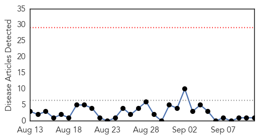
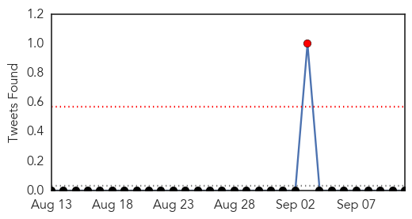
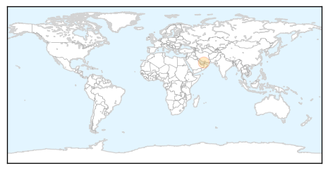
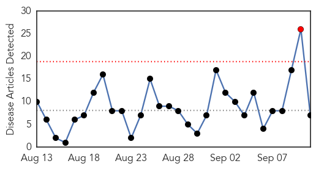
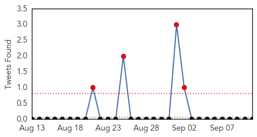
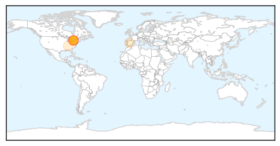
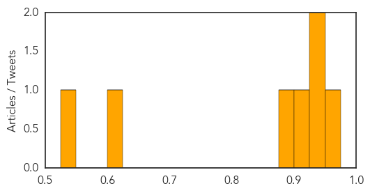

Hepatitis
30-Day Web Trend
0 alerts, 0 warnings

30-Day Twitter Trend
1 alerts, 0 warnings

Article Locations
Article Confidences

Top Articles:
Top Tweets:
-
No tweets found for Sep 11, 2015
Influenza
30-Day Web Trend
1 alerts, 0 warnings

30-Day Twitter Trend
3 alerts, 0 warnings

Article Locations
Article Confidences
Top Articles:
- 0.972
- Union says Ontario nurses can’t be forced to wear masks in flu season
- 0.931
- Union Says Ontario Nurses Can’t be Forced to Wear Masks in Flu Season
- 0.926
- Nurse flu shot/mask rule shot down
- 0.902
- Ontario Nurses Association Speaks Out Against 'Vaccine Or Mask' Policy
- 0.879
- Union says Ontario nurses can't be forced to wear masks in flu season
- 0.625
- Prehistoric giant virus will be revived by scientists
- 0.548
- State agriculture officials preparing for possibility of bird fl
Top Tweets:
-
No tweets found for Sep 11, 2015